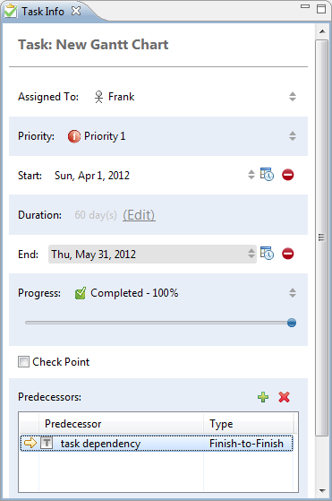
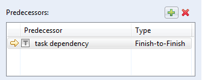
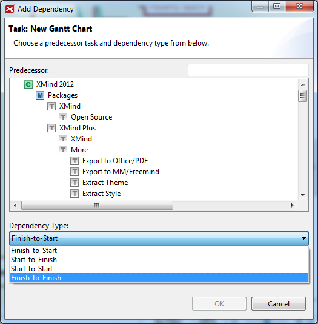

Task Info
XMind Pro is not only good at clarifying thinking and managing complex information, but also at managing project. In taskinfo view, we can add more detailed information to a task. And it can help us to perform better on management. Actually, we can add people who is responsible for this task, start/end date, duration, task's priority, predecessors and the progress.
- Select a topic, and open TaskInfo View by clicking "Window - Task Info".
- Then, we can see and change the following information in the view:
- Task: This is the content of selected Task;
- Assigned to: Select or input the people who are responsible for this task;
- StartDate/EndDate: Select the proper date for this task. You can even set an exactly time if required;
- Duration: This shows how many days you can finish this task. You can set it directly too.
- Progress: Move the slide to change task progress;
- Priority: Select proper priority level for this task in the drop-down list;
- Predecessors: Click the plus button to add a predecessor to selected task.
- Check Point: Enable this check box will now show Progress information in the Gantt Chart View.

Task DependencyIn a project, we always meet the requirement to insert a dependency relation among the tasks. Now, you can achieve this in XMind with few simple steps.
- Select task A
- Open TaskInfo View by clicking "View - Show TaskInfo" from the menu
- Scroll down to Predecessors field, and click Plus button

- Choose the task B in the coming Task Dependency dialog
- Confirm the Dependency type,
- Finish to Start, Task A can't be started until Task B is finished.
- Start to Finsih, Task A can't be finished until Task B is started.
- Start to Start, Task A can't be started until Task B is started.
- Finish to Finish, Task A can't be finished until Task B is finished.
- Click ok to finish
Task Dependency Dialog 
Note: All information added in taskinfo view will be shown in Gantt View.